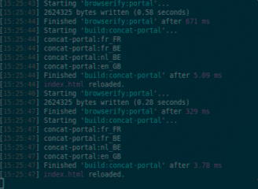

Browserify, c'est quoi déjà ?
De manière simple, browserify permet d'avoir accès à l'écosystème de NodeJS (NPM, CommonJS) avec des scripts destinés au navigateur (browser).
Après avoir installé le module browserify via NPM, il peut s'utiliser directement en ligne de commande :
browserify main.js -o bundle.js
Mais est plus souvent utilisé en tant que librairie dans un script NodeJS :
var fs = require('fs');
var browserify = require('browserify');
var bundleWS = fs.createWriteStream(__dirname + '/bundle.js');
browserify({
entries: "main.js"
}).bundle().pipe(bundleWS);
On remarque immédiatement que browserify utilise des flux textes ou text streams comme format de sortie via bundle().
Cela permet une grande souplesse mais ausi de pouvoir l'utiliser avec d'autres outils utilisant les streams comme gulp.
Attention car ce dernier utilise un format de stream spécifique, basé sur le système de fichier : vinyl. Il faudra donc convertir le text stream en ce format avant d'utiliser des pipes gulp.
Browserify propose des transforms, qui sont des tranformateurs de flux, comme la minification (uglify) ou l'ajout de scripts de librairies tiers comme bower ou shim.
On peut aussi lui ajouter des greffons (plugins) afin d'ajouter à browserify d'autres capacités comme le watching avec Watchify.
A quoi consiste la construction à la volée (watching) ?
Il s'agit littéralement de vérifier l'état d'un ensemble de fichiers et de déclencher un processus à chaque modification.
Par extension, on appelle également watching :
- la construction d'un nouveau livrable à chaque modification,
- et dans le cas de scripts navigateurs, le rechargement de la page (
livereload)
Comment le met-on en place ?
Watchify
Watchify est un plugin browserify. Il peut s'ajouter à la configuration grâce à l'attribut plugin ou via un wrapper :
var fs = require('fs');
var browserify = require('browserify');
var watchify = require('watchify');
var bundleWS = fs.createWriteStream(__dirname + '/bundle.js');
//config
browserify(Object.assign({
entries: "main.js",
plugin: [watchify]
}, watchify.args)).bundle().pipe(bundleWS);
Ou
var fs = require('fs');
var browserify = require('browserify');
var watchify = require('watchify');
var bundleWS = fs.createWriteStream(__dirname + '/bundle.js');
//wrapping
watchify(browserify(Object.assign({
entries: "main.js",
}, watchify.args))).bundle().pipe(bundleWS);
Vous avez sûrement remarqué qu'on ajoute en plus des watchify.args à browserify, ces arguments sont :
{
cache: {},
packageCache: {}
}
En fait, ces options permettent d'activer le cache des sources et des modules NPM de browserify. Cela permet à watchify de reconstruire les livrables de manière incrémentale.
Il est évident que la création du livrable est nettement plus rapide de cette manière, d'ailleurs watchify impose ces options et ne fait rien le cas échéant.
Seulement quelques millisecondes sont nécessaires pour reconstruire les sources grâce à la construction incrémentale :

Livereload
Une fois les sources construites, il est pratique de recharger la page immédiatement et automatiquement. C’est là qu’intervient livereload, qui grâce aux WebSockets, recharge la page à chaque reconstruction.
Nous allons utiliser gulp-livereload et voir ainsi comment on combine les différents streams :
var browserify = require('browserify');
var watchify = require('watchify');
var source = require('vinyl-source-stream');
var livereload = require('gulp-livereload');
browserify(Object.assign({
entries: "main.js",
plugins: [watchify]
}, watchify.args)).bundle()
//Create Vinyl write streams from conventional write text streams
.pipe(source(__dirname + '/bundle.js'));
.pipe(livereload);
Et oui, gulp-livereload a juste besoin d'être "pipé" pour être fonctionnel (la puissance des streams et de gulp...).
Ensuite, l'appel au script livereload.js doit être ajouté dans la page HTML :
<script src="http://localhost:35729/livereload.js"></script>
Il peut aussi être chargé via un plugin navigateur comme Livereload (Chrome/Chromium) pour ne pas polluer la page. Si HTTPS est nécéssaire (comme sur le site Mappy), préférez le plugin RemoteLivereload (Chrome/Chromium) à Livereload.
Au sujet d'HTTPS, voici conmment on ajoute la clé et le certificat à gulp-livereload :
...
var livereload = require('gulp-livereload');
livereload.listen({
key: fs.readFileSync(__dirname + '/private.key'),
cert: fs.readFileSync(__dirname + '/public.pem')
});
browserify(Object.assign({
...